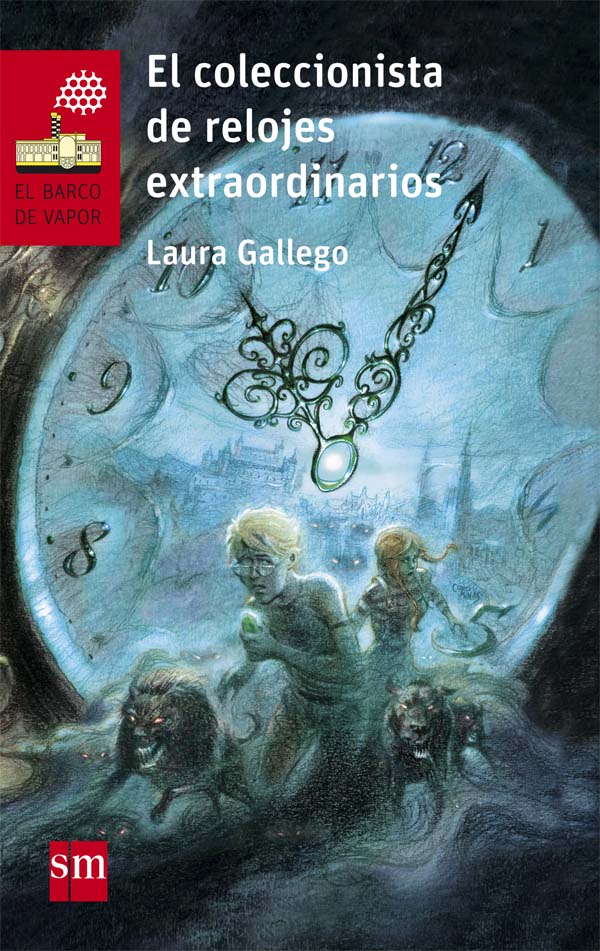

We recomend:
El coleccionista de relojes extraordinarios
RESUM:
Jonathan has twelve hours to find the Deveraux watch. It's the only thing that can save
her stepmother's soul. But there's a problem: the clock is hidden somewhere in the Old City,
a place that transforms as the night progresses.
